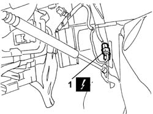
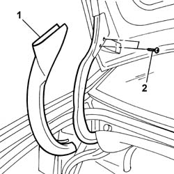

7210E54 BOOT LID - R.R.
- Path
- Procedures > 72 panels and frames > 7210 REMOVING REFITTING > 7210E EXTERNAL PARTS > 7210E54 BOOT LID - R.R.
- Kind
- repair procedure (removal / refitting; the operation number is the code)
- Applies to
- all engines; all production periods
- Interactive page
- https://sloeber94.github.io/elrnDB-lThss/en/#/501188
Applies to: all engines; all production periods
Applies to: all engines; all production periods
 Removing
Removing
 Refitting
Refitting- Open the boot lid.
- Disconnect the negative battery terminal.
See in Op. 7040B10 LOAD CARRYING COMPARTMENT LINING - R.R.
See in Op. 7040B12 Luggage compartment/load platform left SIDE LINING - R.R.
See in Op. 7040B17 Luggage compartment/load platform side trim flap (one) - Replace
See in Op. 7040B13 Luggage compartment/load platform SIDE LINING - R.R.
1. Disconnect the electrical connector.
 | Description | Connector |
|---|---|---|
1 | Rear/boot coupling | D040 |

Applies to: all engines; all production periods
1. Remove the boot lid hinges protection.
2. Undo the bolts fixing the hinges.
- Carry out the same operations on the remaining boot hinges.

Applies to: all engines; all production periods
- Remove the boot lid and rest it on a suitable support.
Applies to: all engines; all production periods
Refitting
Removing- Check that the boot lid is not damaged.
- If necessary, retouch the paintwork.
- Position the boot lid and screw in the hinge fixing bolts without tightening them.
- Connect the electrical connector.
| Description | Connector |
|---|---|---|
. | Rear/boot coupling | D040 |
See in Op. 7040B13 Luggage compartment/load platform SIDE LINING - R.R.
See in Op. 7040B17 Luggage compartment/load platform side trim flap (one) - Replace
See in Op. 7040B12 Luggage compartment/load platform left SIDE LINING - R.R.
See in Op. 7040B10 LOAD CARRYING COMPARTMENT LINING - R.R.
- Connect the negative battery terminal.